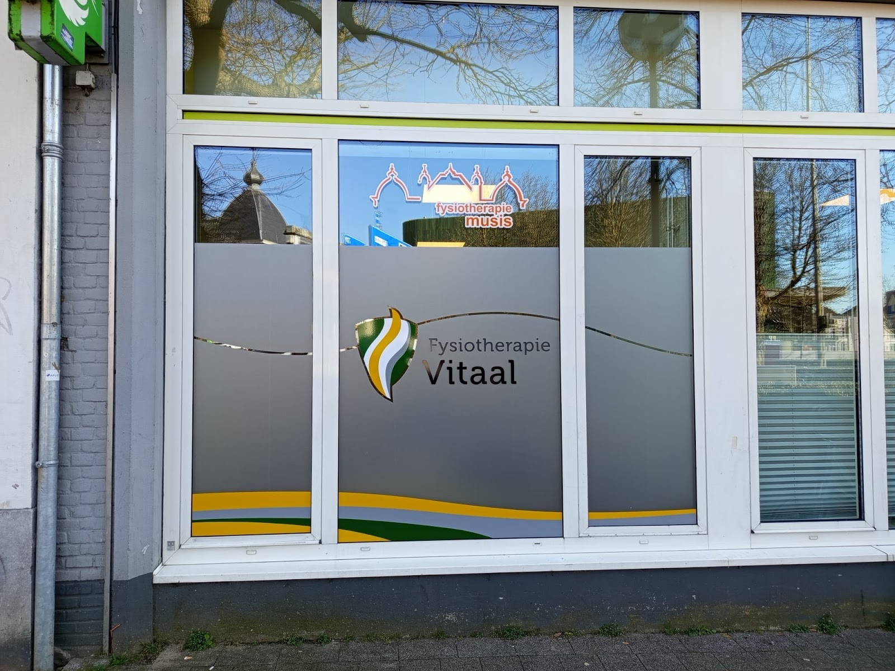
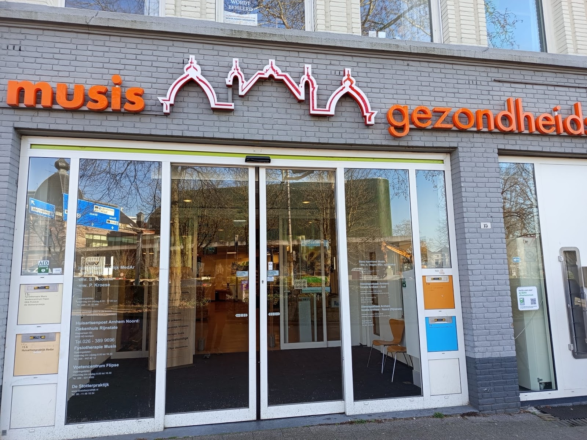

Fysiotherapie in Arnhem centrum
Vandaag pijn, morgen hulp.
Vier fysiotherapeuten in Gezondheidscentrum Musis. Je kunt snel terecht, vaak de volgende dag al, en we nemen de tijd om uit te zoeken waar je klacht echt vandaan komt.

“Geen lichaam is hetzelfde, en geen klacht is identiek. Daarom kies ik bewust voor een persoonlijke aanpak.”
Vincent 't Hart, oprichter en fysiotherapeut
Vincent werkt ruim 20 jaar als fysiotherapeut. Tussen 2012 en 2016 was hij fysiotherapeut bij de politie, daarna begon hij Fysiotherapie Vitaal: een plek waar je je welkom voelt en waar ruimte is voor meer dan alleen het fysieke.
We onderzoeken eerst samen waar de klacht vandaan komt. Soms helpt manuele therapie, soms juist gerichte oefeningen en begeleiding. Het tempo passen we aan op jouw herstel en jouw situatie.
Het doel: dat je weer sterker voelt, vrijer beweegt en kunt doen wat belangrijk voor je is.
Wie je behandelt
Vier fysiotherapeuten, ieder met een eigen specialisme. Eén ding hebben we gemeen: we helpen je graag van je klachten af.
-
Vincent 't Hart
Oprichter en fysiotherapeut
Afgestudeerd in 2005 aan de Hogeschool Rotterdam. Affiniteit met langdurige pijn, onbegrepen klachten, plotselinge pijn en (sport)blessures. Sinds eind 2017 gecertificeerd dry needling-therapeut.
Dry needling, kinesiotaping, hardloopcoach
-
Bram van de Locht
Fysiotherapeut
Afgestudeerd in 2021 aan de Hogeschool Arnhem en Nijmegen. Als algemeen therapeut ziet hij veel soorten klachten, met speciale interesse in sport-, schouder- en rugproblemen. Daarnaast reservist bij Defensie.
Dry needling, kinesiotaping, Slaap-ID
-
Bingyi Zhao
Fysiotherapeut
Afgestudeerd in 2025 aan de Hogeschool Utrecht. Kijkt niet alleen naar het lichaam maar naar de mens als geheel. Interesse in nek-, schouder-, rug- en psychosomatische klachten.
Dry needling, schouder, psychosomatisch
-
Guusje Steenhuis
Fysiotherapeut
Gespecialiseerd in oefentherapie en valpreventie.
Oefentherapie, valpreventie
Waar we je mee helpen
Twijfel je of we iets voor jouw klacht kunnen doen? Bel even, dan denken we met je mee.
Bel 06 10205862Klachten
- Sportblessures
- Rug en nek
- Schouderklachten
- Knieklachten
- Langdurige pijn
- Onbegrepen klachten
Behandelingen
- Dry needling
- Kinesiotaping
- Cupping
- Oefentherapie
- Slaap-ID
- NLP
Wat patiënten zeggen
4,9 gemiddeld uit 42 reviews op Google
“Vorig jaar heeft Bram mijn hand weer tot leven gebracht. Ik kon mijn vingers niet eens meer bewegen, maar na vijf sessies had hij het probleem opgelost: het bleek in de nek te zitten.”
“Na 10 jaar pijn in de benen en verschillende fysio, kwam ik bij Fysiotherapie Vitaal terecht. De eerste keer al vermindering . Fantastisch hoe Vincent mij heeft geholpen. Echt een kanjer, ik ben helemaal van mijn pijn af. Vincent hartelijk dank voor wat je hebt bereikt, geweldig na 10 jaar pijn vrij.”
“Snel en adequaat van hardnekkige blessure afgeholpen. Behandeling duurde ook niet langer dan strikt noodzakelijk. Je krijgt ook de juiste en helpende thuisoefeningen mee die bijdragen aan een voorspoedig herstel. Dankzij fysio Vitaal een marathon en de Roparun probleemloos kunnen volbrengen.”
“Hele fijne fysiotherapeut, vriendelijk en behulpzaam! Ik kreeg hulp van een medewerker genaamd Bingyi en zij heeft mij erg goed geholpen. Ik had mijn knie gekneusd en heb binnen 7 weken erg snel veel bevordering mogen ervaren. Je merkt dat de praktijk jou echt wilt helpen met je klachten. Zeker een aanrader.”
“Deze fysiotherapeuten zijn een echte specialisten in hun vakgebied. Vincent is uiterst bekwaam en weet precies welke behandeling het beste past bij jouw klachten. Doordat ze eerst aandachtig met jou de klacht bespreken komen ze vervolgens met een goed (behandel)plan.”
“Bram heeft me erg goed geholpen. Klachten werden goed geanalyseerd en opties besproken. Na een aantal behandelingen vrijwel klachtenvrij. Laatste beetje zal door eigen doen moeten verdwijnen. Daarnaast ook heel prettig wat betreft het inplannen van afspraken. Ik ben zeer tevreden met de expertise en hulp van Bram.”
“Ik ben heel tevreden over de begeleiding van Bingyi Zhao en erg dankbaar voor haar hulp. Dankzij haar behandeling, adviezen en oefeningen is mijn lichamelijke welzijn echt verbeterd.”
Langskomen of eerst even bellen

Openingstijden
- Maandag
- 08:00 tot 17:30
- Dinsdag
- 10:00 tot 17:30
- Woensdag
- 09:00 tot 17:30
- Donderdag
- 08:00 tot 16:30
- Vrijdag
- 09:00 tot 17:00
- Zaterdag
- Gesloten
- Zondag
- Gesloten